13 Priority Queues and Heaps
Priority queue applications
| Event-driven simulation. | (customers in a line, colliding particles) |
| Numerical computation. | (reducing roundoff error) |
| Data compression. | (Huffman codes) |
| Graph searching. | (Dijkstra’s algorithm, Prim’s algorithm) |
| Number theory. | (sum of powers) |
| Artificial intelligence. | (A* search) |
| Statistics. | (maintain largest M values in a sequence) |
| Operating systems. | (load balancing, interrupt handling) |
| Discrete optimization. | (bin packing, scheduling) |
| Spam filtering. | (Bayesian spam filter) |
Priority queue
A priority queue is a data structure for maintaining a set S of elements, each with an associated value called a key. There are two kinds of priority queues: max-priority queues and min-priority queues.
Max-priority queue supports the following operations.
Insert(S, x): insert the element x into the set S or S\gets S\cup\{x\}.Max(S): return the element of S with the largest key.Remove-Max(S): remove and return the element of S with the largest key.Increase-Key(S, x, \Delta k): increase the value of element x’s key by the \Delta k.
Unordered and ordered array implementation
- A sequence of operations on a max-priority queue
Analysis
Challenge: Implement all operations efficiently.
| implementation | insert | remove max | max |
|---|---|---|---|
| unordered array | 1 | N | N |
| ordered array | N | 1 | 1 |
| goal |
13.1 Binary Heaps
Introduction
- Max heap: A tree is heap-ordered if the key in each node is larger than or equal to the keys in all of that node’s children (if any)
- Min heap: A tree is heap-ordered if the key in each node is smaller than or equal to the keys in all of that node’s children (if any)
- Max heap: No node in a heap-ordered tree has a key larger than the key at the root
- Min heap: No node in a heap-ordered tree has a key smaller than the key at the root
Binary heap representations
A binary heap data structure is a complete binary tree that can be represented by an array object.
Complete binary tree is perfectly balanced, except for bottom level.
Height of complete binary tree with N nodes is \log_{2}(N+1).
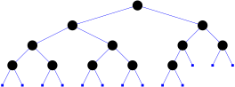Array representation of a max binary heap.
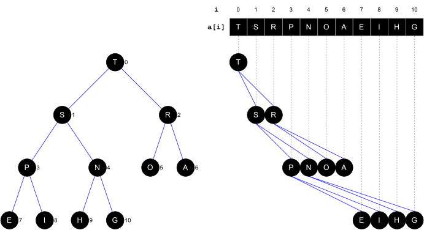
Binary heap properties
- Largest key is a[0], which is root of max binary heap.
- Can use array indices to move through tree.
function Parent(i)
return floor((i - 1) / 2)
function LeftChild(i)
return 2 * i + 1
function RightChild(i)
return 2 * i + 2Insert Key
Promotion in a heap
- Scenario. Child’s key becomes larger key than its parent’s key. (violation)
- To eliminate the violation:
- Exchange key in child with key in parent.
- Repeat until heap order restored.
function Up-Heap(a, i)
while i > 0 do
p ← Parent(i)
if a[i] > a[p] then
Swap(a, i, p)
i ← p
else
returnInsertion in a heap
- Insert.
- Add node at end, then percolate it up.
- Cost.
- At most \log_{2}N+1 compares.
function Insert(a, k)
n ← a.size
a[n] ← k
Up-Heap(a, n)
a.size ← a.size + 1Example
Given a max binary heap

0 1 2 3 4 5 6 7 8 9 10 11 68 65 32 31 26 24 21 20 19 13 Insert key 66 into the heap
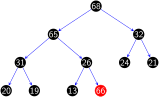0 1 2 3 4 5 6 7 8 9 10 11 68 65 32 31 26 24 21 20 19 13 \textcolor{red}{66} Swap 66 and 26
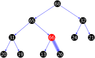0 1 2 3 4 5 6 7 8 9 10 11 68 65 32 31 \textcolor{red}{66} 24 21 20 19 13 \textcolor{blue}{26} Swap 66 and 65
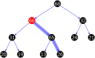0 1 2 3 4 5 6 7 8 9 10 11 68 \textcolor{red}{66} 32 31 \textcolor{blue}{65} 24 21 20 19 13 \textcolor{blue}{26}
Remove Max
Demotion in a heap
- Scenario. Parent’s key becomes smaller than one (or both) of its children’s. (vilolation)
- To eliminate the violation:
- Exchange key in parent with key in larger child.
- Repeat until heap order restored.
function Down-Heap(a, i)
l ← LeftChild(i)
r ← RightChild(i)
largest ← i
if l < a.size and a[l] > a[largest] then
largest ← l
if r < a.size and a[r] > a[largest] then
largest ← r
if largest ≠ i then
Swap(a, i, largest)
Down-Heap(a, largest)Delete the maximum in a heap
- Delete max. Exchange root with node at end, then sink it down.
- Cost. At most 2\log_{2}N compares.
function Remove-Max(a)
n ← a.size
Swap(a, 0, n - 1)
a.size ← a.size - 1
Down-Heap(a, 0)
return a[n]Example
Given a max binary heap
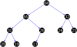0 1 2 3 4 5 6 7 8 9 10 11 68 65 32 31 26 24 21 20 19 13 Delete max : swap 68 and 13 , delete 68
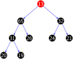0 1 2 3 4 5 6 7 8 9 10 11 \textcolor{red}{13} 65 32 31 26 24 21 20 19 \textcolor{lightgray}{68} Swap 13 and 65
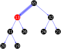0 1 2 3 4 5 6 7 8 9 10 11 \textcolor{blue}{65} \textcolor{red}{13} 32 31 26 24 21 20 19 \textcolor{lightgray}{68} Swap 13 and 31
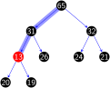0 1 2 3 4 5 6 7 8 9 10 11 \textcolor{blue}{65} \textcolor{blue}{31} 32 \textcolor{red}{13} 26 24 21 20 19 \textcolor{lightgray}{68} Swap 13 and 20
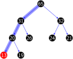0 1 2 3 4 5 6 7 8 9 10 11 \textcolor{blue}{65} \textcolor{blue}{31} 32 \textcolor{blue}{20} 26 24 21 \textcolor{red}{13} 19 \textcolor{lightgray}{68}
Analysis
| implementation | insert | remove max | max |
|---|---|---|---|
| unordered array | 1 | N | N |
| ordered array | N | 1 | 1 |
| binary heap | \log_{2}N | \log_{2}N | 1 |
Increase Key
- To increase the value of a certain key inside the max-heap, we need to reach this key first. In ordinary heaps, we can’t search for a specific key inside the heap.
- Therefore, we’ll keep a map (hash table) beside the original array. This map will store the index of each key inside the heap.
function Increase-Key(a, k, Δk, map)
i ← map[k]
map.Remove(k)
a[i] ← a[i] + Δk
map[a[i]] ← i
Up-Heap(a, i, map)13.2 d-Heaps
Introduction
a d-heap is a heap, each node of which has d children.
A min 3-heap
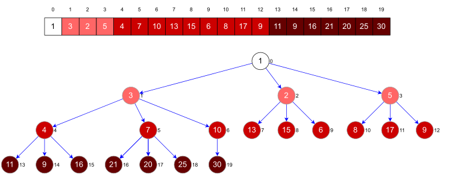
Analysis
- A d-heap is much shallower than a binary heap
| implementation | insert | remove max | max |
|---|---|---|---|
| unordered array | 1 | N | N |
| ordered array | N | 1 | 1 |
| binary heap | \log_{2}N | \log_{2}N | 1 |
| d-heap | \log_{d}N | \log_{d}N | 1 |
13.3 Application
Simulation
Molecular dynamics simulation of hard discs
- Goal.
- Simulate the motion of N moving particles that behave according to the laws of elastic collision.
- Problem.
- N bouncing balls in the unit square.
- Moving particles interact via elastic collisions with each other and walls.
- Each particle is a disc with known position, velocity, mass, and radius.
- No other forces.
Bouncing balls
Check for balls colliding with each other.
- Physics problems: when? what effect?
- CS problems: which object does the check? too many checks?
Time-driven Simulation
Discretize time in quanta of size dt.
- Update the position of each particle after every dt units of time, and check for overlaps.
- If overlap, roll back the clock to the time of the collision, update the velocities of the colliding particles, and continue the simulation.
Main drawbacks
- \sim N^{2}/2 overlap checks per time quantum.
- Simulation is too slow if dt is very small.
- May miss collisions if dt is too large. (if colliding particles fail to overlap when we are looking)
Event-driven simulation
Change state only when something happens.
- Between collisions, particles move in straight-line trajectories.
- Focus only on times when collisions occur.
- Maintain \textcolor{blue}{PQ} of collision events, prioritized by time.
- Remove the min = get next collision.
Collision prediction. Given position, velocity, and radius of a particle. When will it collide next with a wall or another particle?
Collision resolution. If collision occurs, update colliding particle(s) according to laws of elastic collisions.
Particle-wall collision
Collision prediction and resolution.
- Particle of radius s at position (r_{x},r_{y}).
- Particle moving in unit box with velocity (v_{x},v_{y}).
- Will it collide with a vertical wall? If so, when?
Particle-particle collision prediction
Collision prediction
- Particle i: radius s_{i}, position (rx_{i},ry_{i}), velocity (vx_{i},vy_{i}).
- Particle j: radius s_{j}, position (rx_{j},ry_{j}), velocity (vx_{j},vy_{j}).
- Will particles i and j collide? If so, when? \begin{align} \Delta t & =\begin{cases} \infty & \text{if }\Delta v\Delta r\geq0\\ \infty & \text{if }d<0\\ -\dfrac{\Delta v\Delta r}{\Delta v\Delta v} & \text{otherwise} \end{cases}\\ \sigma & =\sigma_{i}+\sigma_{j}\\d & =(\Delta v\Delta r)^{2}-(\Delta v\Delta v)(\Delta r\Delta r-\sigma^{2}) \end{align} where \begin{align} \Delta v & =(\Delta vx,\Delta vy)=(vx_{i}-vx_{j},vy_{i}-vy_{j})\\ \Delta r & =(\Delta rx,\Delta ry)=(rx_{i}-rx_{j},ry_{i}-ry_{j}) \end{align}
Particle-particle collision resolution
Collision resolution
- When two particles collide, how does velocity change?
\begin{array}{ccl} vx_{i}^{\prime} & = & vx_{i}+\dfrac{Jx}{m_{i}}\ \ vy_{i}^{\prime} & = & vy_{i}+\dfrac{Jy}{m_{i}}\ \ vx_{j}^{\prime} & = & vx_{j}-\dfrac{Jx}{m_{j}}\ \ vy_{j}^{\prime} & = & vy_{j}-\dfrac{Jy}{m_{j}} \end{array}
where
\begin{array}{ccl} J & = & \dfrac{2m_{i}m_{j}(\Delta v\Delta r)}{\sigma(m_{i}+m_{j})}\ \ Jx & = & \dfrac{J\Delta rx}{\sigma}\ \ Jy & = & \dfrac{J\Delta ry}{\sigma} \end{array}
Collision system: event-driven simulation main loop
Initialization
- Fill PQ with all potential particle-wall collisions. (“potential” since collision may not happen if some other collision intervenes)
- Fill PQ with all potential particle-particle collisions.
Main loop
- Delete the impending event from PQ (min priority = t).
- If the event has been invalidated, ignore it.
- Advance all particles to time t, on a straight-line trajectory.
- Update the velocities of the colliding particle(s).
- Predict future particle-wall and particle-particle collisions involving the colliding particle(s) and insert events onto PQ.
13.4 Workshop
Quiz
- What is a priority queue?
- What is a binary heap?
- What is a d-heap?